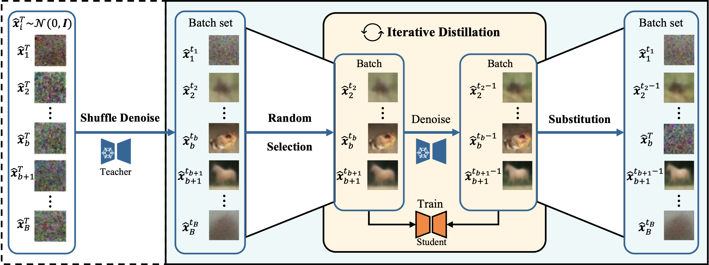
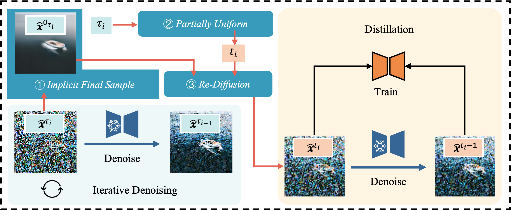
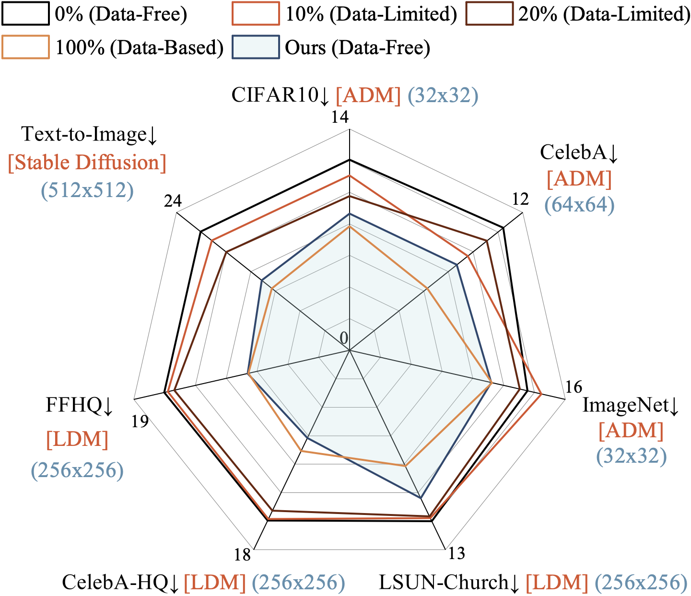

@article{xiang2024dkdmplus,
author = {Xiang, Qianlong and Zhang, Miao and Wang, Kun and Zhang, Haoyu and Guan, Weili and Nie, Liqiang},
title = {Training Diffusion Models from Scratch without Datasets via Dynamic Iterative Distillation and Partially Uniform Re-Diffusion},
journal = {arXiv preprint},
year = {2025},
}
Generation Results: Images generated by existing models and our train-from-scratch smaller models without datasets. Text conditioning in text-to-image generation: 1) "a sandwich in a plastic food basket on a table" and 2) "A living room has a couch, chair, fireplace, windows, and a potted plant."
Abstract
Diffusion models (DMs) have demonstrated exceptional generative capabilities across various domains, including image, video, and so on.
A key factor contributing to their effectiveness is the high quantity and quality of data used during training.
However, the training of mainstream DMs now consumes increasingly large amounts of data, e.g., training a Stable Diffusion model requires billions of image-text pairs.
This enormous data requirement poses significant challenges for training large DMs due to high data acquisition costs and storage expenses.
To alleviate the data burden, recent studies have explored fine-tuning DMs in a data-free manner, while which remain insufficient for training new DMs from scratch.
In this paper, we systematically address this challenge and make four main contributions.
First, we introduce a novel task scenario termed Data-Free Knowledge Distillation for Diffusion Models (DKDM), wherein the generative capabilities of DMs are transferred to new models without access to original data.
Second, by designing a dedicated objective function, we theoretically demonstrate the feasibility of DKDM, which enables the training of new diffusion models from scratch via knowledge distillation in a data-free setting.
Third, we propose a Dynamic ITERative Distillation (DITERD) method, which efficiently extracts diverse knowledge from existing DMs, enabling direct retrieval of training data without the need for a prolonged generative process.
Finally, we introduce a Partially Uniform RE-diffusion (PURE) strategy to further enhance the effectiveness and efficiency of DITERD, which leverages advanced samplers to extract knowledge from existing DMs with fewer sampling steps while still enabling student models to learn from the entire diffusion steps.
To the best of our knowledge, this work represents the first systematic study of data-free training of diffusion models.
Experimental results demonstrate that our data-free approach achieves competitive performance on pixel-space, latent-space, and text-to-image generation tasks, rivaling models trained on complete datasets.
TL;DR
- Motivation: Training diffusion models (DMs) demands massive, high-quality datasets, resulting in prohibitive data acquisition and storage costs. This escalating data requirement hinders the scalability and accessibility of large-scale generative models.
- Core Challenge: How can we train new diffusion models from scratch without any access to original datasets, while ensuring both architectural flexibility and high-quality generative performance—overcoming the limitations of prior data-free or distillation-based approaches?
- Our Contributions
- We introduce Data-Free Knowledge Distillation for Diffusion Models (DKDM), a novel paradigm enabling the training of diffusion models entirely without datasets by leveraging pretrained DMs as the knowledge source.
- We propose Dynamic ITERative Distillation (DITERD) and the Partially Uniform RE-diffusion (PURE) strategy, which together facilitate efficient, flexible, and high-quality knowledge transfer from teacher to student models.
- Extensive experiments demonstrate that our data-free approach achieves competitive performance across multiple generative tasks, rivaling models trained with full datasets.
Method

DITERD Method: Dynamic ITERative Distillation - An enlarged batch set is initially constructed by sampling from a Gaussian distribution. Next, shuffle denoise is applied, wherein each sample is denoised random times. A batch is then randomly selected from this enlarged set for training the student with the denoised results substituting for their counterparts in the batch set. This process is repeated iteratively.

PURE Strategy: Partially Uniform RE-diffusion - Incorporating advanced samplers into DITERD method. PURE enables knowledge extraction from existing DMs with fewer sampling steps while still enabling student models to learn from the entire diffusion steps.
Results
Click the tabs below to switch between different result views

Overall Performance Comparison: Radar chart showing comprehensive performance metrics across different evaluation dimensions. Our data-free approach achieves competitive results compared to models trained with full datasets.
Conclusion
In this paper, we investigate the feasibility of training diffusion models from scratch without access to any original dataset, aiming to address the increasing costs and storage challenges associated with large-scale data requirements in diffusion model training. To this end, we propose a novel DKDM objective and introduce two methods: dynamic iterative distillation and partially uniform re-diffusion. Extensive experiments on seven datasets demonstrate that our approach achieves competitive performance, rivaling mainstream diffusion models trained with full access to original data. To the best of our knowledge, this is the first study on data-free diffusion model training from scratch. We believe our findings can pave the way for reducing data acquisition costs and relieving data privacy concerns in diffusion model training.